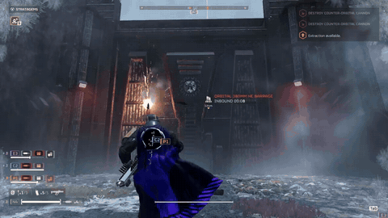
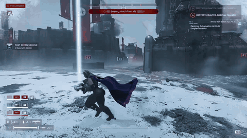
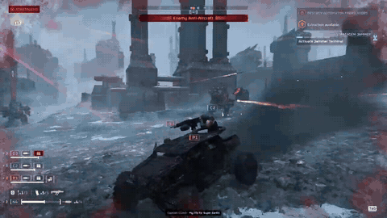

Helldivers 2 review: co-op chaos, armed with a rat mod

Helldivers 2 is a third-person co-op shooter from Arrowhead Game Studios. Squads of up to four Helldivers drop onto hostile planets to finish missions for Super Earth, calling in stratagems from orbit as they go. Friendly fire is on, and the game is very upfront that it will happen.
We played with a rat mod, and the first hour went to getting the game to launch at all. The mod list got cut from 20 down to nine, a fatal error kept coming back, and by the end the rat mod was the only one that still worked. So rats replaced most of what we throw. We took out an Automaton outpost with them, called an orbital strike onto our own escape vehicle, and dropped in a Warthog from a Halo mod that nobody could agree who should drive.


On Cyberstan a vehicle landed on the roof of a tall building, and a handful of rats finally broke down a wall. Later a car crushed the squad, then went missing. It ends with a Splinter Cell style stealth attempt that does not get anyone to the shuttle in time.

It's $39.99 on Steam. The full rat run is below.